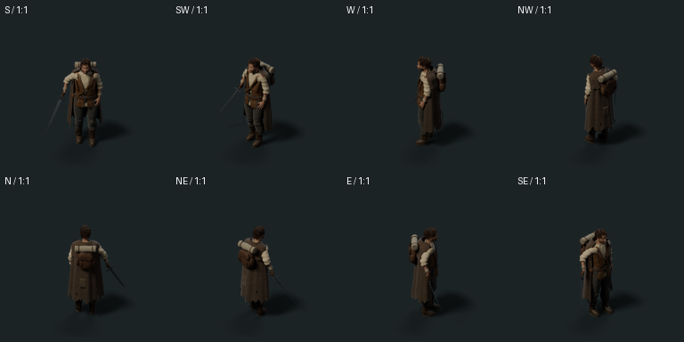
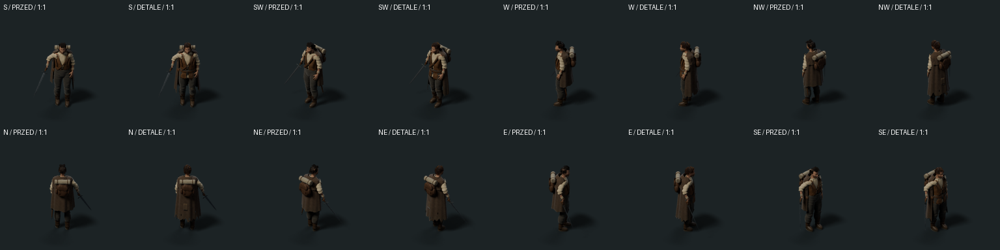
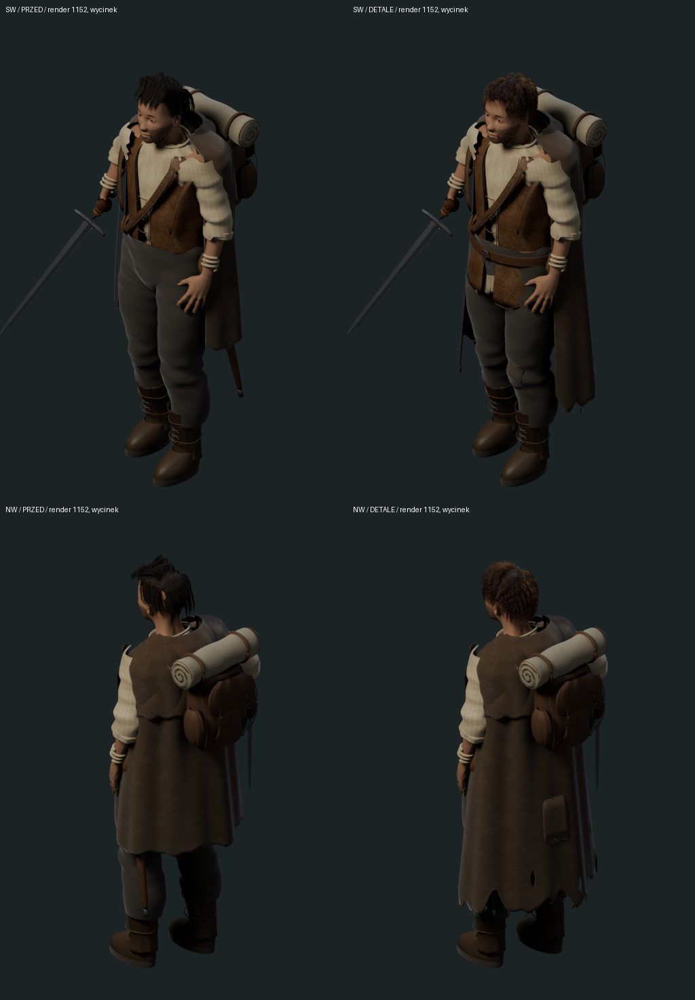
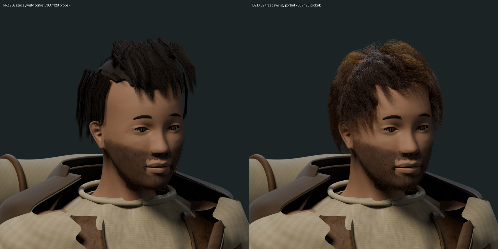
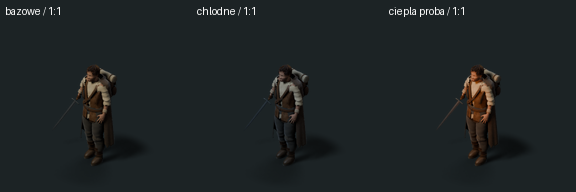

Ta sama postać i skala świata. Wersja robocza do oceny: dłuższy poszarpany płaszcz, łaty i ściegi, dolne połacie kaftana, nierówny brzeg lnu oraz nowe włókna włosów. Nowych detali nie włączono jeszcze do pełnych atlasów animacji.
Model roboczy · Opis zmian i ograniczeń · Wcześniejszy spoczynek/chód bez Blendera — rewizja 08





Detal naprawy płaszcza · Kompozycja na ilustracji koncepcyjnej. Tło bez skalibrowanej skali; przyjęto lokalnie 60 px/m przy kotwicy (590,810). Sprite nie jest powiększony.